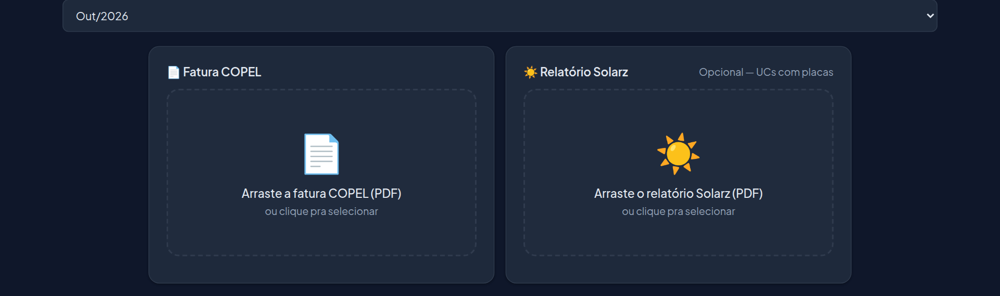
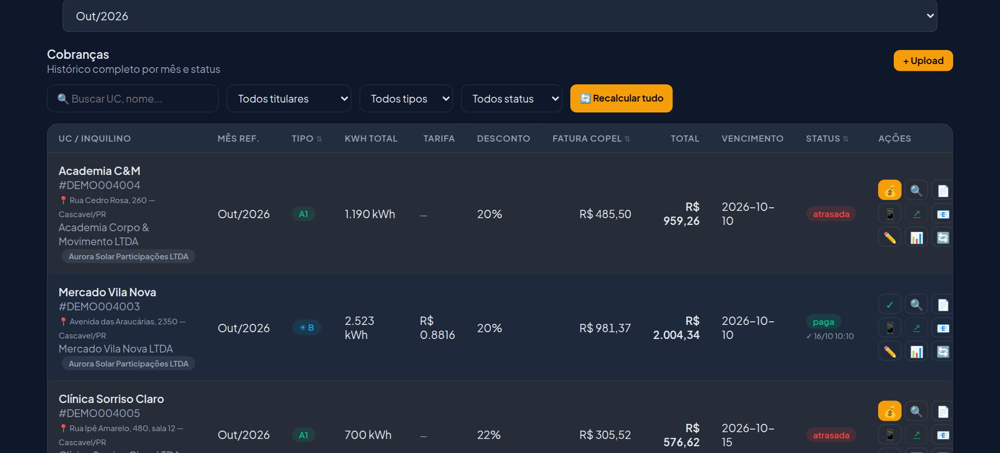
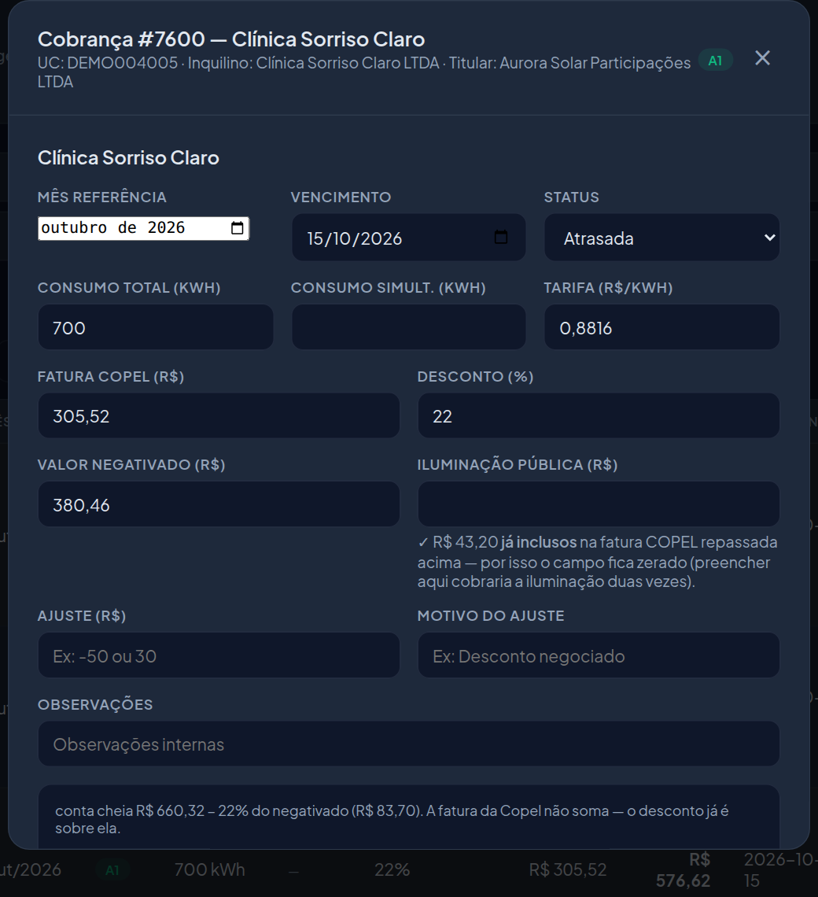
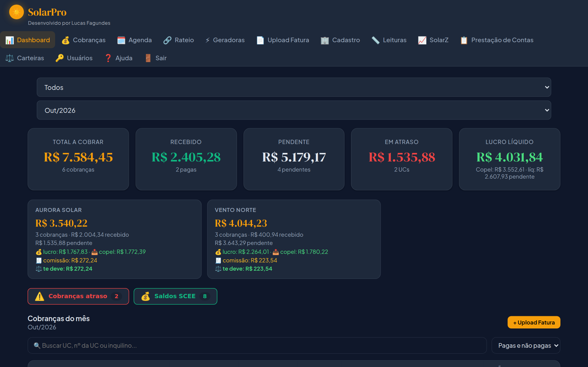
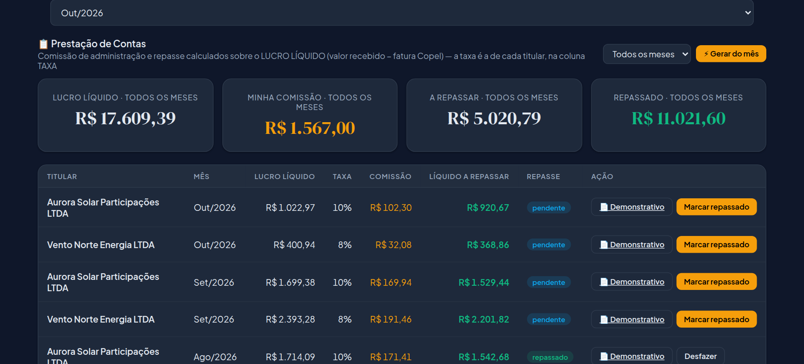

Do primeiro acesso até o mês fechado: cadastrar usina, UCs e beneficiárias, transformar a fatura da Copel em cobrança e dar baixa no pagamento.
No navegador do celular ou do computador: solarpro.luqsys.com.br
Quem não tem conta pode tocar em Testar 3 dias grátis ou abrir a demo, que tem dados de exemplo.
Depois de entrar, toque em 🔐 Ativar Face ID no menu. Na próxima vez, a entrada é com o rosto. A senha continua valendo.
Chame o suporte no WhatsApp que a gente libera uma nova. O Administrador também troca a senha de qualquer login em 🔑 Usuários.
Em Instalar no celular (link na Ajuda) tem o passo a passo do iPhone e do Android. São três atalhos: SolarPro (completo), Resumo e Conferir.
No primeiro acesso abre a tela de boas-vindas com 6 passos. Os três primeiros você faz uma vez só:
Quem está no nome da UC na Copel e recebe o pagamento.
Pela fatura da Copel, o sistema já cria os dois.
Quais UCs recebem o crédito da geradora e quanto.
Os outros três são o ciclo de todo mês:
E o relatório SolarZ nas UCs com placas.
Conferir e mandar pelo WhatsApp ou e-mail.
Dar baixa no Conferir.
Cada passo é um atalho pra tela certa. Depois toque em Ir pro sistema →. Dá pra voltar aqui pela Ajuda (Rever boas-vindas).
| Titular | A pessoa ou empresa dona da UC na Copel. Banco e PIX dele saem na cobrança. Tem a taxa de administração (%), usada na prestação de contas. |
| UC | Cada relógio da Copel, pelo número da fatura. |
| Inquilino | Quem usa o imóvel e paga a cobrança de energia solar. |
| Geradora / beneficiária | Geradora é a UC com placas. Beneficiária é a UC que recebe crédito dela. |
Em Cadastro → Inquilinos, toque em 📄 Importar da fatura Copel e mande o PDF da fatura do imóvel. O sistema lê titular, endereço, nº da UC, classe e consumo. Você revisa, escolhe a geradora e cria.
| ☀ B | O imóvel tem placas ("Tem geração local" = Sim). |
| A1 | Sem placas, recebe crédito de uma usina, e quem paga a Copel é a administração ("Quem paga COPEL" = Nós). |
| A2 | Sem placas, e o inquilino paga a Copel direto. A cobrança é só da energia compensada, com desconto. |
No cadastro da UC ficam também o desconto (%), o tipo de fornecimento (que define o mínimo da Copel: 30, 50 ou 100 kWh) e, na UC com placas, Como cobrar: Padrão (energia solar aproveitada com desconto + repasse da fatura), Relógio próprio (kWh medido no seu relógio com desconto + iluminação) ou Benefício líquido (o quanto a placa derrubou a conta, com desconto, + a fatura).
Em Geradoras, abra a usina. Em 🎯 Rateio planejado, adicione as beneficiárias e o % de cada uma. Recalcular proporcional sugere os % pelo consumo e pelo saldo. Salve e baixe o ⚡ Novo formulário de rateio pra protocolar na Copel. Ele só vale quando a Copel aplica, normalmente na fatura do ciclo seguinte.
Em Upload Fatura, arraste o PDF da Copel (um por vez). O sistema lê e preenche os campos: UC, mês, vencimento, tarifa, total, iluminação, consumo e energia injetada. Revise, toque em ⚡ Calcular cobrança, confira a prévia e ✅ Confirmar e salvar.

Na UC com placas, a cobrança depende de quanto a placa gerou e o imóvel usou na hora (o consumo simultâneo). Esse número só o inversor tem: é a geração do inversor menos a energia injetada na rede. Por isso essas UCs precisam do relatório SolarZ do mês. Sem ele, a cobrança fica esperando, pra não sair errada.
Em Cobranças fica a lista do mês, com tipo, kWh, fatura da Copel, total, vencimento e status (Rascunho, Confirmada, Enviada, Paga, Atrasada). O vencimento segue a fatura da Copel.

| 🔍 Detalhes | Edita fatura, desconto, negativado, iluminação, leitura e ajuste. Ao salvar, o valor é refeito. |
| 📄 / 📥 | PDF da cobrança (com a economia do inquilino) e a fatura da Copel. 📎 anexa a fatura se faltar. |
| 📱 / 📧 | Envia pelo WhatsApp (mensagem, PDF da cobrança e fatura) ou por e-mail. A mensagem leva os dados de pagamento do titular e um link pra copiar a chave PIX. |
| ✏️ Ajuste | Valor negativo desconta, positivo acrescenta, sempre com motivo. |
| 🔄 Recalcular | Refaz a cobrança com os dados atuais (depois de subir o SolarZ, por exemplo). |

Dois jeitos de dar baixa:
Quando o inquilino manda o comprovante pelo WhatsApp ligado ao sistema, ele aparece com 📎 na cobrança, pra você conferir antes de dar baixa.
Juros por atraso (% ao mês, proporcional aos dias) se configuram no cadastro do inquilino.
Os números do mês: total a cobrar, recebido, pendente, em atraso e lucro líquido, separados por titular. Embaixo, os avisos (onboarding na Copel pendente, UCs sem geradora, alertas de rateio, UCs sem cobrança no mês), as faturas da Copel a pagar, os saldos de crédito (SCEE) e a lista de cobranças.

A comissão de administração é calculada sobre o lucro líquido (valor recebido menos a fatura da Copel), com a taxa de cada titular. O resto é o valor a repassar. Toque em ⚡ Gerar do mês, abra o Demonstrativo (PDF pro titular) e use Marcar repassado quando pagar.

| Resumo | App de celular: recebido no mês, atrasos e faturas da Copel a pagar. |
| Rateio | O que a Copel aplicou no mês: quem alimenta quem, beneficiárias mal supridas e crédito parado. |
| Agenda | Ajustes de rateio com prazo. Marque quando fizer na Copel; o sistema confirma na fatura seguinte. |
| Carteiras | Quem deve a quem entre os donos: crédito que passou de uma carteira pra outra e comissão. |
| Geradoras | Geração, auto-consumo, injetada, saldo e o que expira. Demonstrativo e relatório de seguro em PDF. |